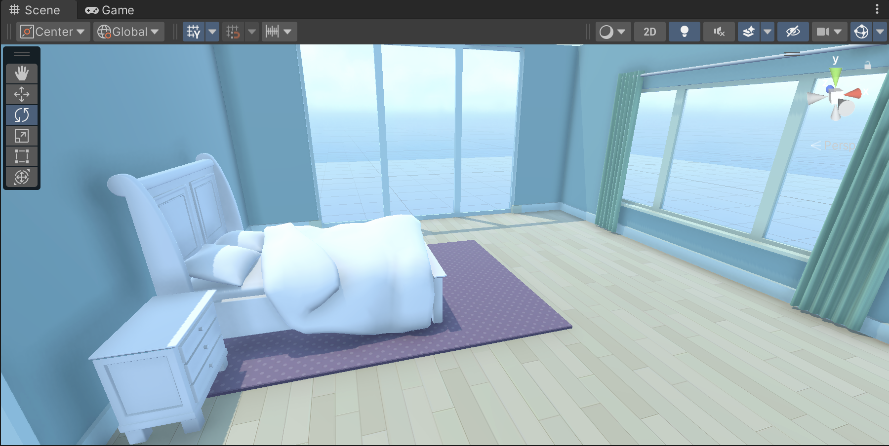
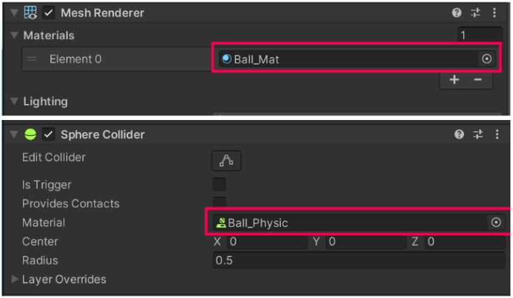
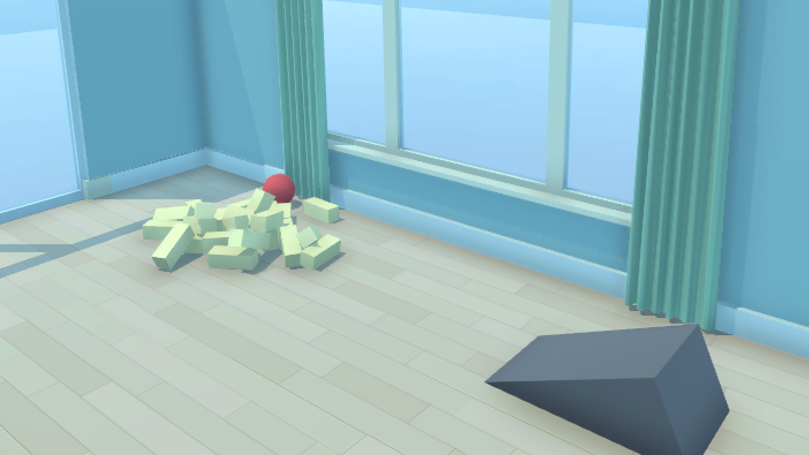
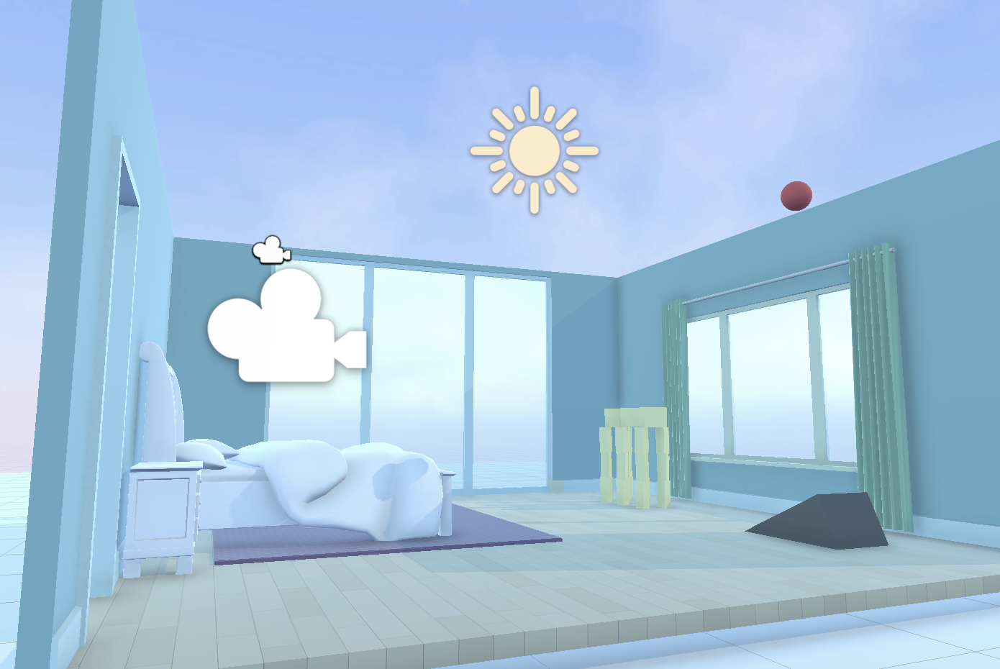

Build a 3D scene as a system of reusable, physical objects.
The finished scene is a furnished room in which a ball falls onto a ramp and collides with a tower. Each visible result comes from a specific asset, GameObject, or component.
- Place and transform prefab instances.
- Separate geometry, appearance, collision, and motion.
- Configure a Rigidbody, Collider, and Physics Material.
- Create, instantiate, and edit a prefab.
- Organize objects with parent-child relationships.
- Compose the Game view with camera, light, and skybox controls.
Compose the room from prefab instances
A Unity scene stores GameObjects and their relationships. The Project window stores reusable assets. Dragging a prefab asset into a scene creates a prefab instance in the Hierarchy.
A reusable object definition stored on disk. It can produce many consistent instances.
A placed occurrence of that definition in the active scene. Its Transform records where it is.
- Open Assets → _Unity Essentials → Scenes → 2_KidsRoom_3D_Scene.
- From Prefabs → Rooms, drag 01_Bedroom into the Scene view.
- Set its Position to X 0, Y 0, Z 0. This places the room at the world origin.
- Browse Prefabs → Bedroom. Single-click a prefab to preview it before placing it.
- Add a bed against the left wall, then add a rug and at least one more furniture item.
- Leave one corner clear for the physics tower. Save with Ctrl/Cmd + S.

Construct the ball, then assign its visual material
A primitive sphere is only the starting geometry. Its Transform determines placement and size; the Mesh Renderer and Material determine its visible surface.
| Layer | Unity element | Responsibility |
|---|---|---|
| Location | Transform | Position, rotation, and scale. |
| Geometry | Mesh Filter | The vertices and triangles that define the sphere. |
| Appearance | Mesh Renderer + Material | How the mesh is drawn and shaded. |
| Collision | Sphere Collider | The boundary used by the physics engine. |
| Motion | Rigidbody | Gravity, mass, drag, and simulated movement. |
- Right-click the Hierarchy and choose 3D Object → Sphere. Rename it Ball.
- Set Scale to 0.25, 0.25, 0.25. One Unity unit usually represents one metre.
- Set Position to X 2, Y 3, Z -1.
- Create Materials → My Materials, then create a Material named Ball_Mat.
- Adjust Base Map Color, Metallic, and Smoothness. Drag Ball_Mat onto the Ball.
Configure gravity, bounce, and collision
Physics is component-based. A Rigidbody makes a GameObject participate in simulation, a Collider defines contact geometry, and a Physics Material controls surface response.
Moves the object under gravity and forces. Mass changes how strongly it exchanges momentum in collisions.
Defines the contact boundary. A visible mesh without a Collider can be passed through.
- Select Ball and choose Add Component → Rigidbody. Test: it should now fall.
- Create a Physics Material named Ball_Physics and set Bounciness to 1.
- Assign Ball_Physics to the Material field of the Ball's Sphere Collider.
- Add the Ramp prefab from Prefabs → Shapes. Position it under the Ball and rotate it toward the open corner.
- Test once without a ramp Collider. Observe the Ball passing through the visible ramp.
- Add a Mesh Collider to the Ramp and enable Convex. Test again and save.

| Observed failure | Likely missing configuration | Inspect |
|---|---|---|
| Ball remains suspended | No Rigidbody | Ball components |
| Ball falls but barely bounces | No Physics Material or low Bounciness | Sphere Collider |
| Ball passes through ramp | No Collider on Ramp | Ramp components |
| Object looks wrong but collides correctly | Visual Material issue | Mesh Renderer |
Targeted video references
Source: Make a bouncy ball ↗
Build a physical tower from one block
The tower introduces a production pattern: configure one object, convert it into a prefab, then instantiate it. Repetition happens after the object is correct.
- Create a Cube, rename it Block, and reset its Transform.
- Use approximately 0.1, 0.25, 0.1 for Scale, then place the Block in the Ball's path.
- Add a Rigidbody. Without it, the Block can obstruct the Ball but will not respond as a freely simulated body.
- Create a Project folder named My Prefabs. Drag Block from the Hierarchy into it.
- Duplicate or drag instances to make a stable tower. Inspect the structure from multiple angles.
- Test the chain: Ball → Ramp → Tower. Adjust placement, not the physics rules, until contact occurs.

Edit the definition, then organize the instances
A prefab is useful because shared changes can be made once. Open the Block prefab in Prefab Mode, change its Rigidbody Mass to 0.1 kg, and assign a visual Material. Every connected instance should update.
Changes only that occurrence unless the override is applied back to the prefab.
Changes the reusable definition and updates its connected instances.
- Double-click the Block prefab asset to enter Prefab Mode.
- Set Rigidbody Mass to 0.1. Use the Mesh Renderer Material field to assign its appearance.
- Exit Prefab Mode and verify that every Block instance reflects the changes.
- Select all tower blocks. Create an empty parent and name it Block_Tower.
- Move or rotate Block_Tower. Its child blocks should move as one group.
- Optionally convert Block_Tower into a prefab to create several tower instances.
Targeted video references
Source: Make a tower of prefab blocks ↗
Frame the simulation for the Game view
Scene view is an authoring camera. Game view displays the active Camera GameObject. The final presentation depends on the Camera, Directional Light, and skybox rather than the Scene view angle.
| Control | Changes | Does not change |
|---|---|---|
| Camera Transform | Viewpoint and viewing direction | Object positions |
| Field of View | How wide or narrow the perspective appears | Camera location |
| Directional Light rotation | Direction of scene illumination and shadows | Sun effect through position |
| Skybox | Background and environmental reflections | Scene geometry |
- Enable the Cameras overlay in Scene view so the selected Camera shows a preview.
- Navigate to a view that includes the Ball, Ramp, Tower, and enough room context.
- Select the Camera and press Ctrl/Cmd + Shift + F to align it with the current Scene view.
- Adjust Camera Position, Rotation, and Field of View. Verify the result in Game view.
- Rotate the Directional Light; then adjust its Color and Intensity. Its position does not affect the sun-like direction.
- Drag a skybox from Materials → Skyboxes onto the sky.
- If baked lighting or reflections are stale, open Window → Rendering → Lighting and choose Generate Lighting.

Extend one part of the system
Choose one extension. The levels indicate the number of new operations, not the quality of the final result.
Completion criteria
The lecture is complete when the system works and you can explain which part produces each result.
Diagnostic questions
- Why can a visible ramp fail to stop the Ball?
- Why does changing Ball_Mat not increase Bounciness?
- When should you edit a prefab asset instead of one instance?
- Which Camera property changes framing without changing Camera position?